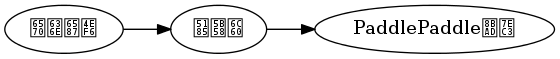

PaddlePaddle常见问题¶
Contents
1. 如何减少PaddlePaddle的内存占用¶
神经网络的训练本身是一个非常消耗内存和显存的工作。经常会消耗数十G的内存和数G的显存。 PaddlePaddle的内存占用主要分为如下几个方面:
- DataProvider缓冲池内存 (只针对内存)
- 神经元激活内存 （针对内存和显存）
- 参数内存 (针对内存和显存)
- 其他内存杂项
这其中，其他内存杂项是指PaddlePaddle本身所用的一些内存，包括字符串分配，临时变量等等， 这些内存就不考虑如何缩减了。
其他的内存的减少方法依次为
减少DataProvider缓冲池内存¶
PyDataProvider使用的是异步加载，同时在内存里直接随即选取数据来做Shuffle。即
所以，减小这个内存池即可减小内存占用，同时也可以加速开始训练前数据载入的过程。但是，这 个内存池实际上决定了shuffle的粒度。所以，如果将这个内存池减小，又要保证数据是随机的， 那么最好将数据文件在每次读取之前做一次shuffle。可能的代码为
@provider(min_pool_size=0, ...)
def process(settings, filename):
os.system('shuf %s > %s.shuf' % (filename, filename)) # shuffle before.
with open('%s.shuf' % filename, 'r') as f:
for line in f:
yield get_sample_from_line(line)
这样做可以极大的减少内存占用，并且可能会加速训练过程。 详细文档参考 这里 。
神经元激活内存¶
神经网络在训练的时候，会对每一个激活暂存一些数据，包括激活，參差等等。 在反向传递的时候，这些数据会被用来更新参数。这些数据使用的内存主要和两个参数有关系， 一是batch size，另一个是每条序列(Sequence)长度。所以，其实也是和每个mini-batch中包含 的时间步信息成正比。
所以，做法可以有两种。他们是
- 减小batch size。 即在网络配置中
settings(batch_size=1000)设置成一个小一些的值。但是batch size本身是神经网络的超参数，减小batch size可能会对训练结果产生影响。 - 减小序列的长度，或者直接扔掉非常长的序列。比如，一个数据集大部分序列长度是100-200, 但是突然有一个10000长的序列，就很容易导致内存超限。特别是在LSTM等RNN中。
2. 如何加速PaddlePaddle的训练速度¶
PaddlePaddle是神经网络训练平台，加速PaddlePaddle训练有如下几个方面：
- 减少数据载入的耗时
- 加速训练速度
- 利用更多的计算资源
减少数据载入的耗时¶
使用 pydataprovider`时，可以减少缓存池的大小，同时设置内存缓存功能，即可以极大的加速数据载入流程。
:code:`DataProvider 缓存池的减小，和之前减小通过减小缓存池来减小内存占用的原理一致。
@provider(min_pool_size=0, ...)
def process(settings, filename):
os.system('shuf %s > %s.shuf' % (filename, filename)) # shuffle before.
with open('%s.shuf' % filename, 'r') as f:
for line in f:
yield get_sample_from_line(line)
同时 @provider 接口有一个 cache 参数来控制缓存方法，将其设置成 CacheType.CACHE_PASS_IN_MEM 的话，会将第一个 pass (过完所有训练数据即为一个pass)生成的数据缓存在内存里，在之后的 pass 中，不会再从 python 端读取数据，而是直接从内存的缓存里读取数据。这也会极大减少数据读入的耗时。
加速训练速度¶
PaddlePaddle支持Sparse的训练，sparse训练需要训练特征是 sparse_binary_vector 、 sparse_vector 、或者 integer_value 的任一一种。同时，与这个训练数据交互的Layer，需要将其Parameter设置成 sparse 更新模式，即设置 sparse_update=True
这里使用简单的 word2vec 训练语言模型距离，具体使用方法为:
使用一个词前两个词和后两个词，来预测这个中间的词。这个任务的DataProvider为:
DICT_DIM = 3000
@provider(input_types=[integer_sequence(DICT_DIM), integer_value(DICT_DIM)])
def process(settings, filename):
with open(filename) as f:
# yield word ids to predict inner word id
# such as [28, 29, 10, 4], 4
# It means the sentance is 28, 29, 4, 10, 4.
yield read_next_from_file(f)
这个任务的配置为:
... # the settings and define data provider is omitted.
DICT_DIM = 3000 # dictionary dimension.
word_ids = data_layer('word_ids', size=DICT_DIM)
emb = embedding_layer(
input=word_ids, size=256, param_attr=ParamAttr(sparse_update=True))
emb_sum = pooling_layer(input=emb, pooling_type=SumPooling())
predict = fc_layer(input=emb_sum, size=DICT_DIM, act=Softmax())
outputs(
classification_cost(
input=predict, label=data_layer(
'label', size=DICT_DIM)))
更多关于sparse训练的内容请参考 sparse训练的文档
利用更多的计算资源¶
利用更多的计算资源可以分为一下几个方式来进行:
- 单机CPU训练
* 使用多线程训练。设置命令行参数
trainer_count，即可以设置参与训练的线程数量。使用方法为paddle train --trainer_count=4 - 单机GPU训练
* 使用显卡训练。设置命令行参数
use_gpu。 使用方法为paddle train --use_gpu=true* 使用多块显卡训练。设置命令行参数use_gpu和trainer_count。使用--use_gpu=True开启GPU训练，使用trainer_count指定显卡数量。使用方法为paddle train --use_gpu=true --trainer_count=4 - 多机训练
* 使用多机训练的方法也比较简单，需要先在每个节点启动
paddle pserver，在使用paddle train --pservers=192.168.100.1,192.168.100.2来指定每个pserver的ip地址 * 具体的多机训练方法参考 多机训练 文档。
3. 遇到“非法指令”或者是“illegal instruction”¶
paddle在进行计算的时候为了提升计算性能，使用了avx指令。部分老的cpu型号无法支持这样的指令。通常来说执行下grep avx /proc/cpuinfo看看是否有输出即可知道是否支持。（另：用此方法部分虚拟机可能检测到支持avx指令但是实际运行会挂掉，请当成是不支持，看下面的解决方案）
解决办法是:
- 使用 NO_AVX的 安装包 或者 Docker image
- 或者，使用
-DWITH_AVX=OFF重新编译PaddlePaddle。
4. 如何选择SGD算法的学习率¶
在采用sgd/async_sgd进行训练时，一个重要的问题是选择正确的learning_rate。如果learning_rate太大，那么训练有可能不收敛，如果learning_rate太小，那么收敛可能很慢，导致训练时间过长。
通常做法是从一个比较大的learning_rate开始试，如果不收敛，那减少学习率10倍继续试验，直到训练收敛为止。那么如何判断训练不收敛呢？可以估计出如果模型采用不变的输出最小的cost0是多少。
如果训练过程的的cost明显高于这个常数输出的cost，那么我们可以判断为训练不收敛。举一个例子，假如我们是三分类问题，采用multi-class-cross-entropy作为cost，数据中0,1,2三类的比例为 0.2, 0.5, 0.3 , 那么常数输出所能达到的最小cost是 -(0.2*log(0.2)+0.5*log(0.5)+0.3*log(0.3))=1.03 。如果训练一个pass（或者更早）后，cost还大于这个数，那么可以认为训练不收敛，应该降低学习率。
5. 如何初始化参数¶
默认情况下，PaddlePaddle使用均值0，标准差为 \(\frac{1}{\sqrt{d}}\) 来初始化参数。其中 \(d\) 为参数矩阵的宽度。这种初始化方式在一般情况下不会产生很差的结果。如果用户想要自定义初始化方式，PaddlePaddle目前提供两种参数初始化的方式:
- 高斯分布。将
param_attr设置成param_attr=ParamAttr(initial_mean=0.0, initial_std=1.0) - 均匀分布。将
param_attr设置成param_attr=ParamAttr(initial_max=1.0, initial_min=-1.0)
比如设置一个全连接层的参数初始化方式和bias初始化方式，可以使用如下代码。
hidden = fc_layer(input=ipt, param_attr=ParamAttr(initial_max=1.0, initial_min=-1.0),
bias_attr=ParamAttr(initial_mean=1.0, initial_std=0.0))
上述代码将bias全部初始化为1.0, 同时将参数初始化为 [1.0, -1.0] 的均匀分布。
6. 如何共享参数¶
PaddlePaddle的参数使用名字 name 作为参数的ID，相同名字的参数，会共享参数。设置参数的名字，可以使用 ParamAttr(name="YOUR_PARAM_NAME") 来设置。更方便的设置方式，是想要共享的参数使用同样的 ParamAttr 对象。
简单的全连接网络，参数共享的配置示例为:
from paddle.trainer_config_helpers import *
settings(learning_rate=1e-4, batch_size=1000)
a = data_layer(name='feature_a', size=200)
b = data_layer(name='feature_b', size=200)
fc_param = ParamAttr(name='fc_param', initial_max=1.0, initial_min=-1.0)
bias_param = ParamAttr(name='bias_param', initial_mean=0.0, initial_std=0.0)
softmax_param = ParamAttr(
name='softmax_param', initial_max=1.0, initial_min=-1.0)
hidden_a = fc_layer(
input=a, size=200, param_attr=fc_param, bias_attr=bias_param)
hidden_b = fc_layer(
input=b, size=200, param_attr=fc_param, bias_attr=bias_param)
predict = fc_layer(
input=[hidden_a, hidden_b],
param_attr=[softmax_param, softmax_param],
bias_attr=False,
size=10,
act=SoftmaxActivation())
outputs(
classification_cost(
input=predict, label=data_layer(
name='label', size=10)))
这里 hidden_a 和 hidden_b 使用了同样的parameter和bias。并且softmax层的两个输入也使用了同样的参数 softmax_param。
7. *-cp27mu-linux_x86_64.whl is not a supported wheel on this platform.¶
出现这个问题的主要原因是，系统编译wheel包的时候，使用的 wheel 包是最新的，
而系统中的 pip 包比较老。具体的解决方法是，更新 pip 包并重新编译PaddlePaddle。
更新 pip 包的方法是:
pip install --upgrade pip
8. python相关的单元测试都过不了¶
如果出现以下python相关的单元测试都过不了的情况：
24 - test_PyDataProvider (Failed)
26 - test_RecurrentGradientMachine (Failed)
27 - test_NetworkCompare (Failed)
28 - test_PyDataProvider2 (Failed)
32 - test_Prediction (Failed)
33 - test_Compare (Failed)
34 - test_Trainer (Failed)
35 - test_TrainerOnePass (Failed)
36 - test_CompareTwoNets (Failed)
37 - test_CompareTwoOpts (Failed)
38 - test_CompareSparse (Failed)
39 - test_recurrent_machine_generation (Failed)
40 - test_PyDataProviderWrapper (Failed)
41 - test_config_parser (Failed)
42 - test_swig_api (Failed)
43 - layers_test (Failed)
并且查询PaddlePaddle单元测试的日志，提示：
paddle package is already in your PYTHONPATH. But unittest need a clean environment.
Please uninstall paddle package before start unittest. Try to 'pip uninstall paddle'.
解决办法是：卸载paddle包 pip uninstall paddle。
原因是：单元测试使用了一个旧版本的python包，而没有测试到代码中实际修改的python包。即单元测试需要一个干净的环境：
- 如果paddle包已经在python的site-packages里面了，那么单元测试时使用的paddle包，就是site-packages里面的python包，而不是源码目录里
/python目录下的python包。 - 即便设置了
PYTHONPATH到/python也没用，因为python的搜索路径是优先已经安装的python包。